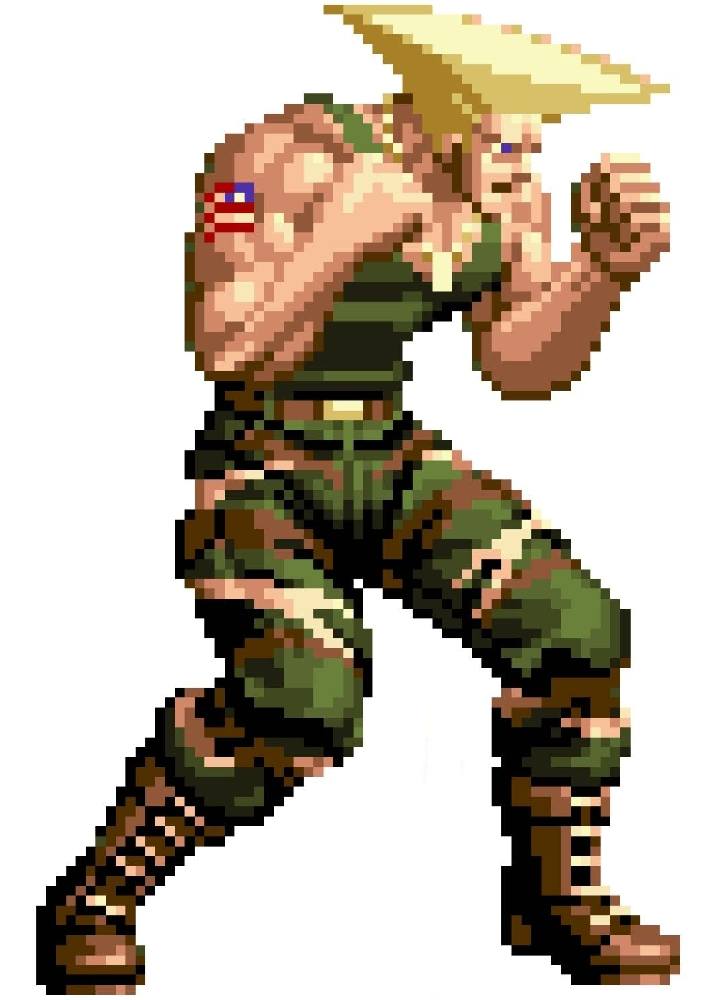
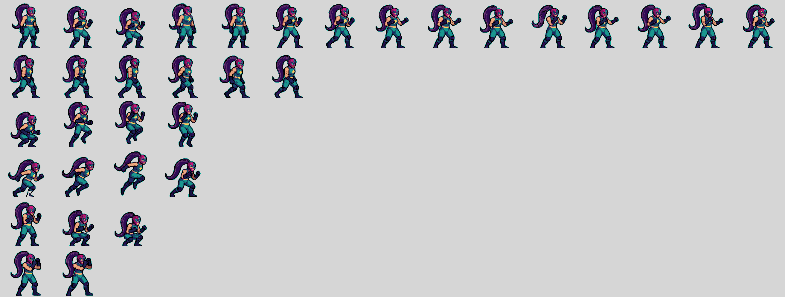
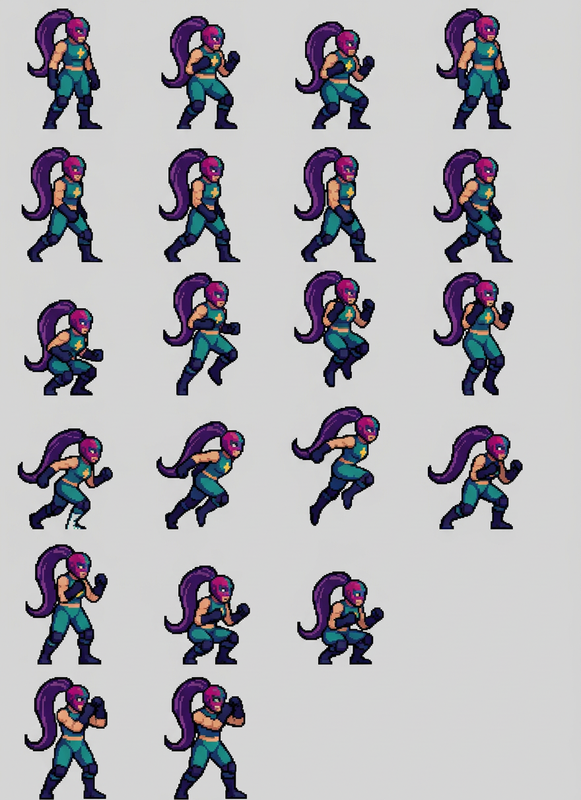
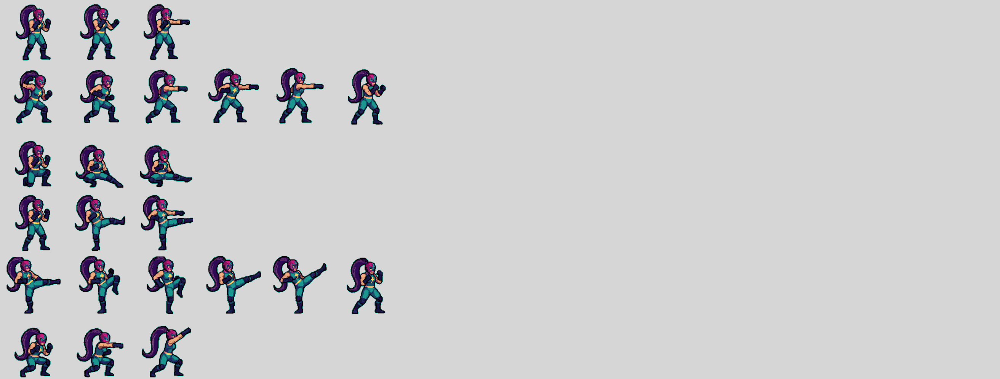
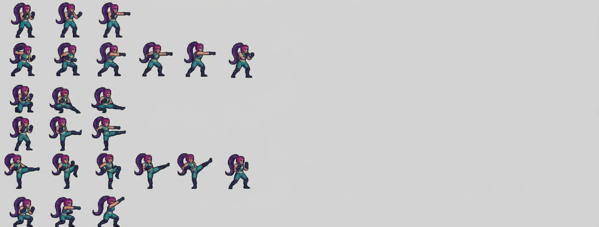
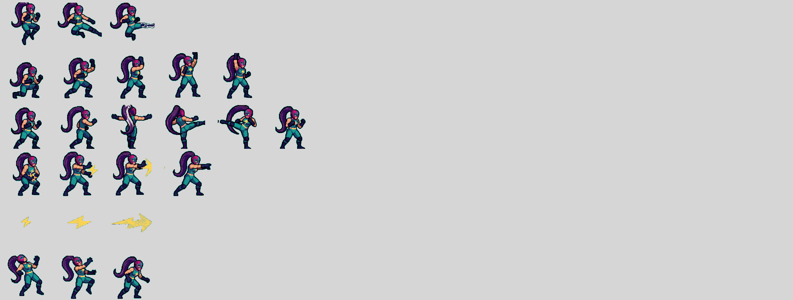
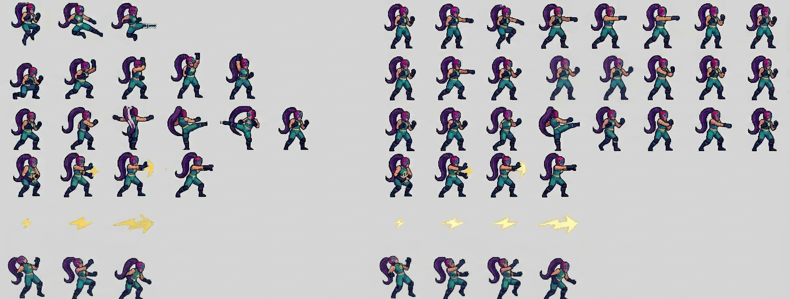
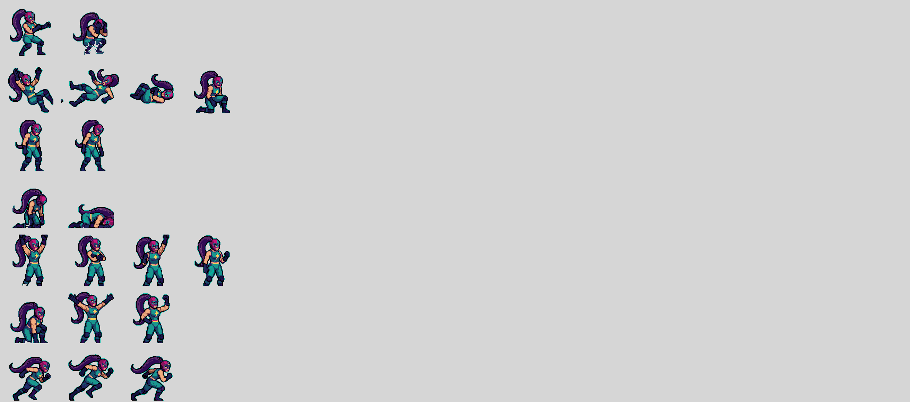
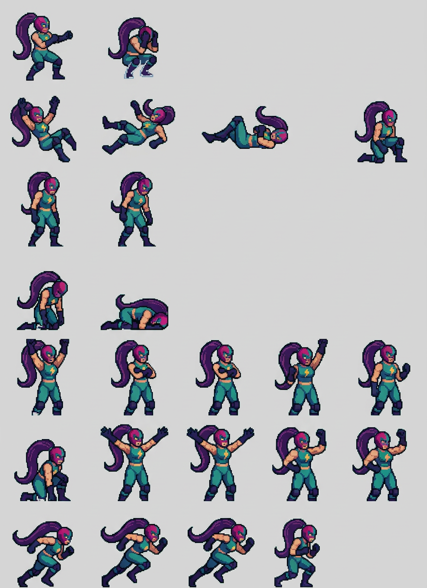

El resultado que queremos · referencia Cammy
Píxeles duros, paleta corta y plana, línea negra dentro del dibujo y ningún halo alrededor. Eso es lo que se le pidió imitar.

· paleta de 16-24 colores planos, sin mezclas
· borde de píxel duro, sin antialias
· línea negra dentro del dibujo
· sin contorno exterior añadido
· escala real: un personaje de ~70-100 px de alto
Medido en la IA: 81 000-151 000 colores y 88-94 % de bordes suavizados. Se parece a Cammy a distancia, pero por dentro no lo es.
Parte 1 · filas 1-6 · la que mejor ha salido
Conserva 6 filas, pero reduce 15 columnas a 7 y separa los sprites. Aun así es la única que mantiene algo de la rejilla original.


Parte 2 · filas 7-12
Aquí sí conserva las 6 filas y se acerca a las 15 columnas en las filas llenas, pero vuelve a repartir los sprites y añade huecos.


Parte 3 · filas 13-18 · la que peor ha salido
Duplicó el contenido: pintó la misma tira dos veces, una al lado de otra. La rejilla queda inservible y los sprites salen repetidos (60 componentes donde había 24).


Parte 4 · filas 19-25
También reduce de ancho (880 px) y reordena, pero conserva las 7 filas y las poses de derribo y recuperación.


Visor de frames · lo recortado de las 4 partes
25 animaciones, 89 frames de los 102 originales. Elige animación; en rojo las que han perdido frames. Escala y fondos como en el modelo original.
Medidas de esta iteración
| Parte | Filas | Original | IA | Colores | Bordes suaves | Sprites (orig → IA) |
|---|---|---|---|---|---|---|
| 1 | 1-6 | 2 625 × 996 | 880 × 1 212 | 125 123 | 90,5 % | 42 → 21 |
| 2 | 7-12 | 2 625 × 996 | 1 680 × 637 | 81 716 | 94,0 % | 21 → 24 |
| 3 | 13-18 | 2 625 × 996 | 1 680 × 637 (duplicada) | 151 914 | 87,6 % | 24 → 60 |
| 4 | 19-25 | 2 625 × 1 162 | 880 × 1 212 | 139 323 | 89,6 % | 17 → 24 |
| Total | 25 | 2 625 × 4 150 | — | — | — | 102 → 89 |
Lo que sigue sin cumplirse: ninguna de las 4 partes respeta la rejilla ni el tamaño 1:1 (880-1 680 px de ancho donde se le dieron 2 625). Ninguna entrega la paleta plana de Cammy: 81 000-151 000 colores y 88-94 % de bordes suavizados. La parte 3 sale duplicada y se pierden 13 frames de 102.
Conclusión medida: partir la hoja en tiras no arregla ni la resolución, ni la paleta, ni la rejilla. El acabado de Cammy no se consigue pidiéndolo en el prompt; se consigue dibujando a resolución de arte con la paleta cerrada, que es justo lo que hace el modelo oficial.